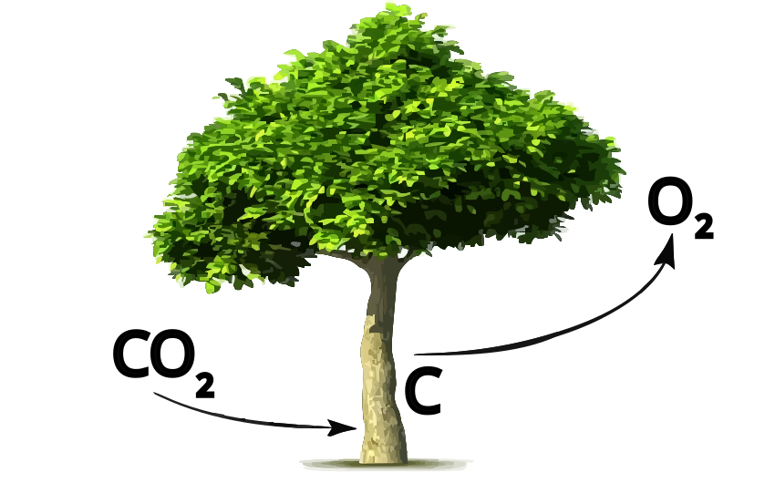

Ufficio autonomo gestione verde urbano, agricoltura urbana e rapporti con RESET

Rigenerazione del Verde Urbano di Palermo
: Riqualificazione Stradale e Arredo della Città
Albero selezionato:
Progetto
Analisi Territoriale
Analisi Botanica
0 – 70 m
0 – 300 cm
LIPU Ispezioni
Alberi ispezionati · Protocollo Tutela Faunistica LIPU
Ispezionato OK
Stato di necessità
Lavori sospesi
Disclaimer — I dati geografici e botanici degli alberi provengono dal patrimonio arboreo reale del Comune di Palermo. I dati relativi agli operatori, alle ditte esecutrici e agli esiti delle ispezioni faunistiche sono generati sinteticamente da Claude AI a puro scopo dimostrativo. Non hanno alcun valore legale, amministrativo o probatorio.
Caricamento…
LIPU Ispezioni
Alberi ispezionati · Protocollo Tutela Faunistica LIPU
Ispezionato OK
Stato di necessità
Lavori sospesi
Disclaimer — I dati geografici e botanici degli alberi provengono dal patrimonio arboreo reale del Comune di Palermo. I dati relativi agli operatori, alle ditte esecutrici e agli esiti delle ispezioni faunistiche sono generati sinteticamente da Claude AI a puro scopo dimostrativo. Non hanno alcun valore legale, amministrativo o probatorio.
Lavorazione—
——
Nessuna data di lavorazione presente nel dataset. Il filtro si attiverà automaticamente quando le colonne F1/F2/F3 verranno popolate.
Vie interessate dalla Rigenerazione del Verde Urbano0
UPL
Quartiere
Circoscrizione
Benefici Ambientali

CO₂ Assorbita
0 kg/anno
O₂ Prodotto
0 kg/anno
Specie arboree principali
CPC - Classe Propensione Cedimento
Dimora
Distribuzione altezze
Foglie totali nelle stagioni
Cod. Lavorazione
Costo Lavorazione
Costo totale lavorazioni0 €
NOTA IMPORTANTE: I costi indicati sono suscettibili di variazioni a causa di: modifiche in corso d'opera, variazione dei prezzi delle materie prime, esigenze progettuali non preventivate, ecc.
LIPU · Protocollo Tutela Faunistica
—
Alberi dataset
—
Ispezionati
—
Da ispez.
0%
Stato Ispezioni
—
Ispezionato OK
—
Necessità
—
Sospesi
Top Specie
UPL
Quartiere
Circoscrizione
Dettagli Albero
Fai clic su un albero per visualizzare o stampare la scheda informativa
Versione di test — solo uso interno
Questa webmap è ancora in fase di sviluppo. I dati sono stati georeferenziati in modo automatico e potrebbero contenere errori o imprecisioni.
Anche se sei arrivato qui tramite un motore di ricerca, questo spazio è riservato al gruppo di lavoro interno. Stiamo verificando i contenuti, testando le funzionalità e raccogliendo feedback prima del rilascio ufficiale. Se fai parte del gruppo e noti qualcosa che non va, segnalacelo: è esattamente il tipo di aiuto di cui abbiamo bisogno.
Se invece sei capitato qui per caso, ti chiediamo gentilmente di non utilizzare i dati presenti: non hanno valore legale e non costituiscono atti ufficiali.
Filtri Attivi
Lista alberi ispezionati
ID
Specie
Data
Quartiere
UPL
Esito
Operatore
PDF
Filtri Avanzati
Cookie e statistiche d'uso
Questo sito usa cookie tecnici per il suo funzionamento. Con il tuo consenso vengono usati anche cookie analitici (Google Analytics) per misurare l'uso del sito in forma aggregata e anonima.